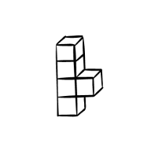

Project
De werknemerservaring verbeteren tijdens een veranderproces

Samenvatting
Deze ontwikkeling verbeterd de werknemerservaring, zo wordt stress en bezorgheid bij medewerkers verminderd

Verantwoordelijkheden
User Experience Design
User Interface Design
Project
De werknemerservaring verbeteren tijdens een veranderproces
Samenvatting
Deze ontwikkeling verbeterd de 'employee experience'; stress en bezorgheid bij medewerkers wordt verminderd
Verantwoordelijkheden
User Experience Design
User Interface Design
Research
Ik ben dit project begonnen met een onderzoeksfase, in deze fase is de doelgroep beperkt tot kantoormedewerkers. Op basis van de gegevens was het duidelijk dat:
- Medewerkers voelen zich vaak niet gehoord en serieus genomen, omdat ze ondanks het geven van feedback geen veranderingen zien
- Medewerkers voelen zich overweldigd door het hoge tempo waarin ontwikkeling plaatsvindt
- Werknemers verzetten zich tegen procesveranderingen vanwege onzekerheden zoals potentiële financiële instabiliteit en gebrek aan werkgelegenheid
Uit deze inzichten kwam het idee voort om een systeem te ontwikkelen waarin zorg centraal staat. Vooral omdat verandering in werkomgevingen onvermijdelijk is; dit leidde tot de beslissing om te focussen op het welzijn van de medewerkers. Om op deze manier te proberen de werknemerservaring te verbeteren tijdens de zogenaamde “weerstandsfase”.
Develop
Iteratie 1
Tijdens iteratie 1 lag de focus op het bouwen van een solide en logische structuur. Ik heb dit gedaan aan de hand van een flowchart, dat de algehele flow van het prototype dat ik ging maken heeft gevormd. De flowchart vormde de basis voor het prototype, waarvoor ik gelijktijdig een low-key design system bouwde. Dit design system was gebaseerd op eenvoud en robotachtige elementen. Waarin ik probeerde een vriendelijke en rustige benadering te bereiken. Dit heb ik geprobeerd te bereiken met uitnodigende vormen en neutrale kleuren.
Iteratie 2
De CareBot is in de eerste plaats een systeem dat interactie overbrengt, in deze fase via vrij eenvoudige vragen. Ik kies voor deze manier van communiceren zodat het product inzetbaar is voor alle digitale vaardigheidsniveaus. Het systeem zal de gebruiker helpen op basis van data-invoer en 'prompt-driven' machine learning. De ontwikkeling van dit systeem is primair gebaseerd op het gebruik van desktop, maar kan ook worden opgeschaald naar kleinere schermen zoals tablet en smartphone.
Tijdens iteratie 2 heb ik mij geconcentreerd op het produceren en ontwerpen van de CareBot. Dit op basis van de flowchart en de feedback die ik heb verzameld.
Deliver
De laatste fase was gewijd aan kleine reparaties, zoals bugs en een meer diepgaande ontwikkeling van de vooraf geschreven vragen en antwoorden. Evenals het voorbereiden van een in-depth presentatie voor de stakeholders.
Het product komt overeen met de gegeven opdracht. Het zorgt voor werknemers, stelt hen in staat hun hart te luchten en praktische tips en oefeningen te krijgen om hun werknemerservaring te verbeteren. Of de CareBot op lange termijn kan helpen, moet nog worden ontdekt. Toch is dit een van de vele stappen in de richting van goede psychologische gezondheidszorg op de werkvloer.